Android Browser for E-Ink Devices
Tap screen edges or use volume keys to turn pages. Reader mode, vertical text layout, custom fonts, bold toggle, and zero animations.
Chat with pages, run multi-step task-runner workflows with a free-form agent, summarize, and hear articles read aloud in a news-anchor voice. Supports OpenAI, Gemini, Ollama, and custom servers.
Paragraph-by-paragraph inline translation, full-page translation, and image text translation. Multiple providers including DeepL and Google.
Export to EPUB with chapters and images, save as PDF, archive as MHT, capture full-page screenshots, or send to Instapaper.
40+ configurable toolbar actions with drag reordering. Top, bottom, or side toolbar. Split screen, floating button, and gesture navigation.
Built-in ad blocker, JavaScript/cookie whitelists, tracking parameter pruning, incognito mode, and per-site desktop mode.
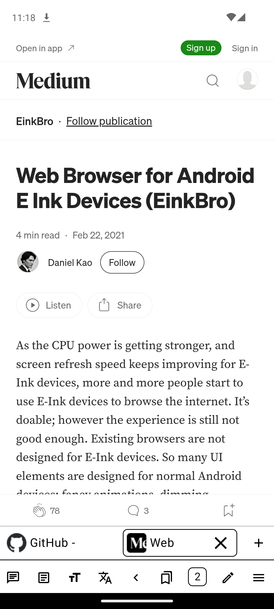
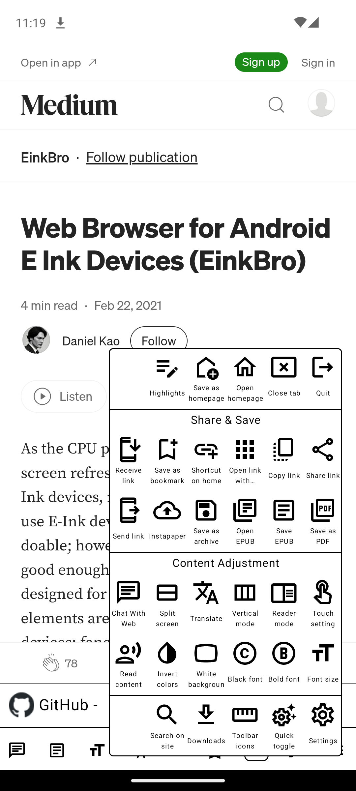
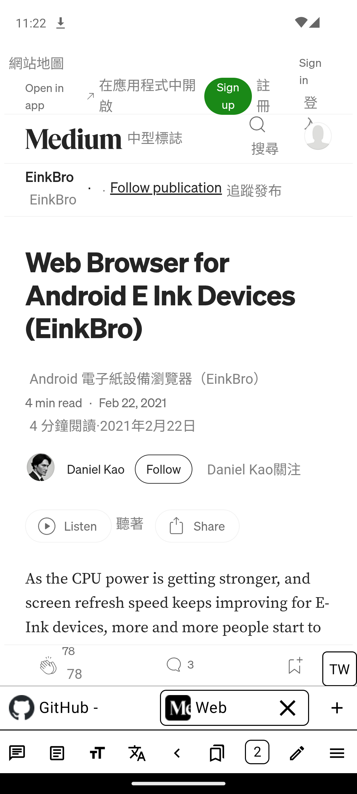
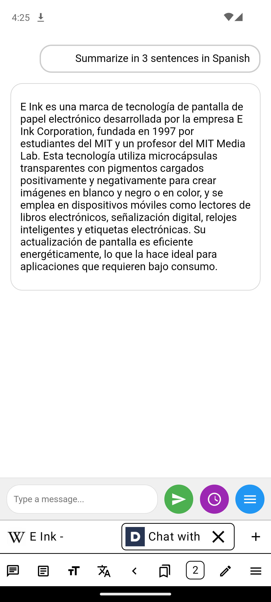
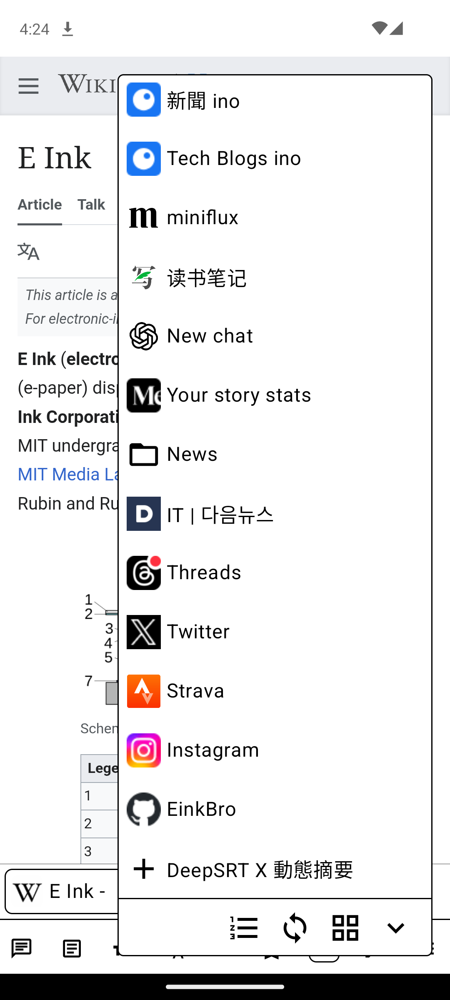
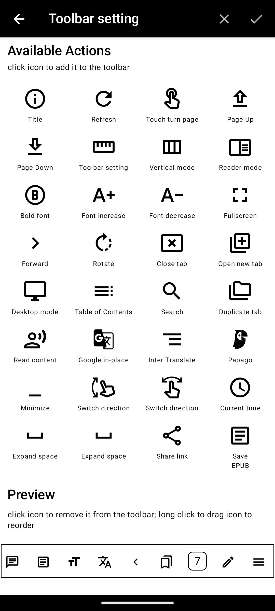
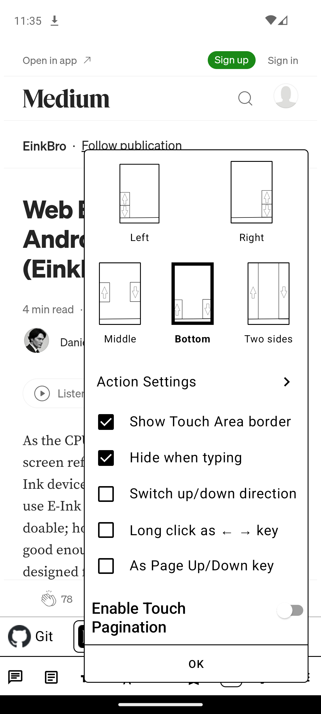
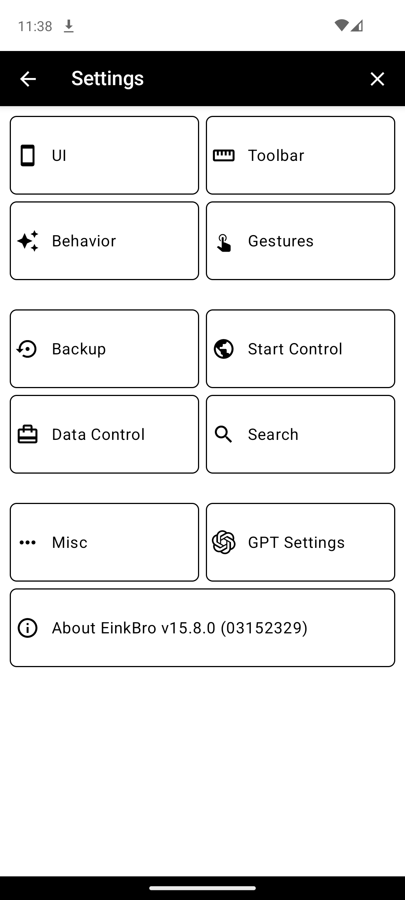
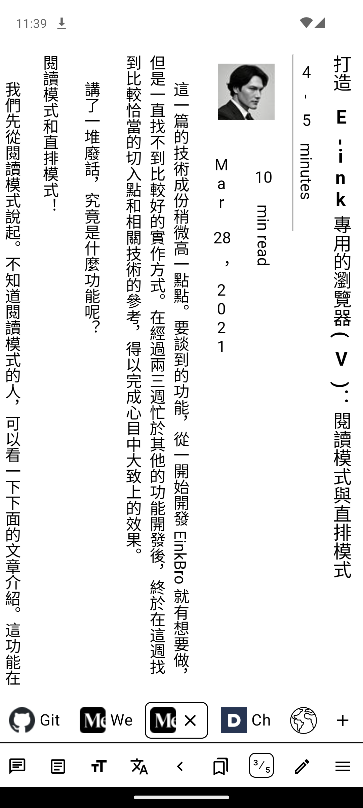
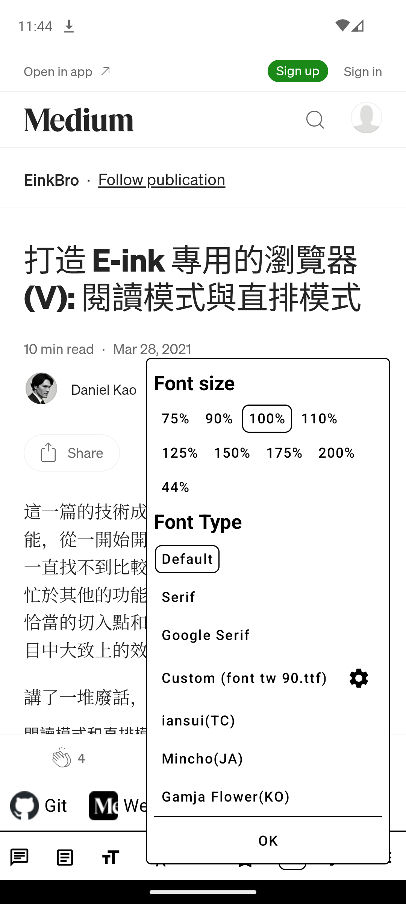
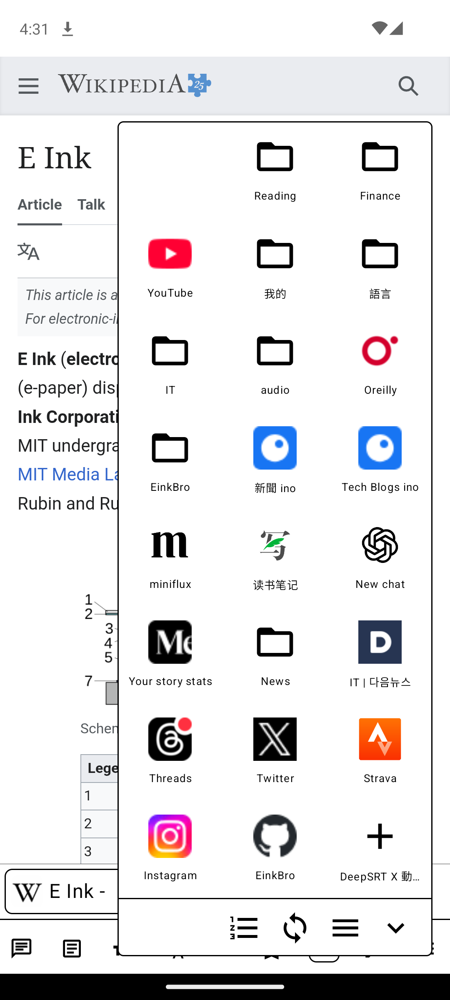